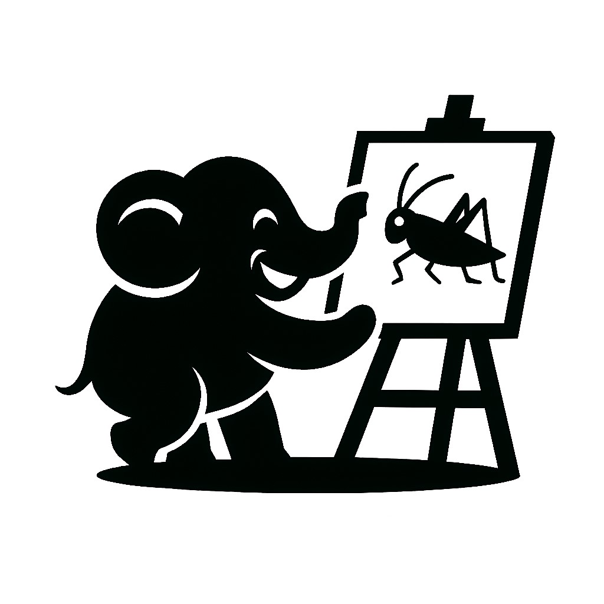

A philosophical discourse platform exploring the relationship between divination and science, expanding the boundaries of human wisdom
Complete lecture materials exploring the relationship between divination and science, including speaker notes and philosophical frameworks
Start Learning →Personal consultation services based on philosophical frameworks, integrating traditional wisdom with modern thinking
Learn More →Read core lectures to understand basic relationships between divination and science
Check FAQ and academic resources to build systematic knowledge
Book professional consultation for personalized guidance
New multilingual SEO-optimized website officially launched, providing better user experience and content navigation.
Learn More →Based on user feedback, we've adjusted the pricing structure for consultation services to provide more flexible options.
View Details →Updated with extensive academic papers and research materials on East-West philosophical comparisons.
Browse Resources →GitHub Repository | Project Documentation | Contributing Guide
© 2025 Divination vs Science Project | Licensed under MIT (Code) and CC BY-NC-SA 4.0 (Content)